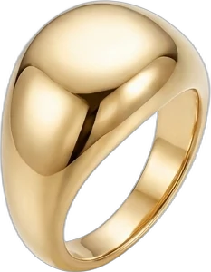
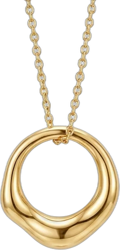
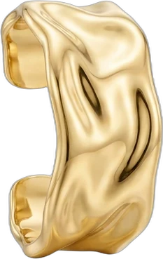
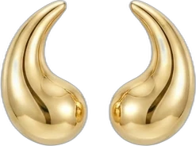
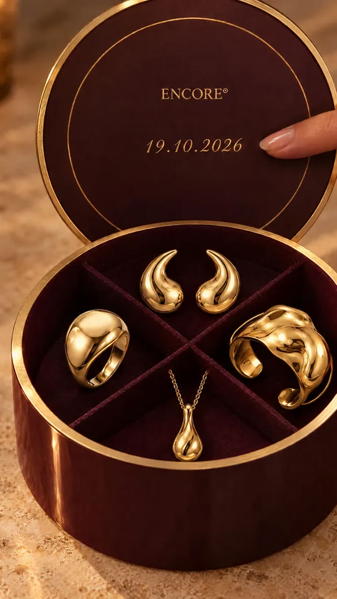
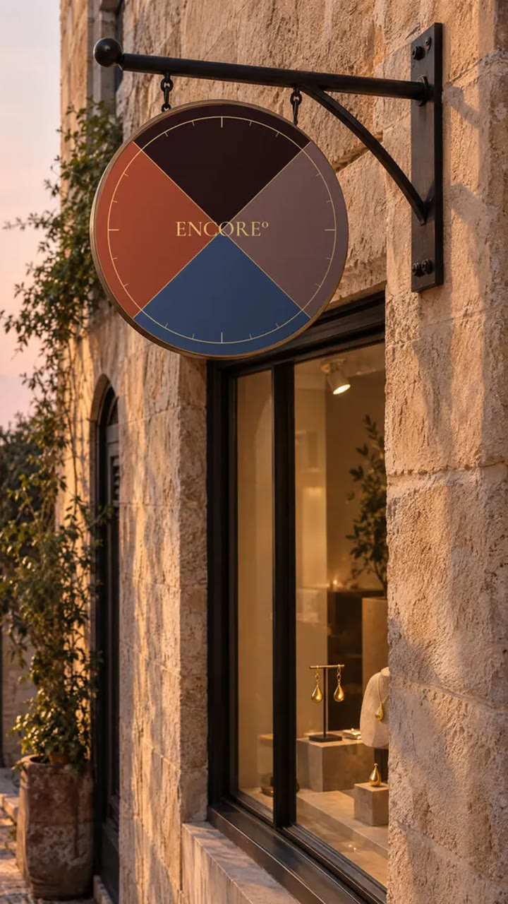

תעודת שעה · נענד לראשונה
ENCORE°
Collier de midi
תעודת שעה · נענד לראשונה
12 : 14
19 . 10 . 2026
רשמנו את השעה.
לכל שעה,
התכשיט שלה.
התכשיט שלה.

Bague de l'aube
06 : 00
שחר · טבעות

Collier de midi
12 : 00
צהריים · שרשראות

Bracelet du soir
18 : 00
שקיעה · צמידים

Boucles de minuit
00 : 00
לילה · עגילים
18 : 00
הצמיד שראית
עוד מחכה לשעה שלו.
עוד מחכה לשעה שלו.
Bracelet du soir

12 : 14
שנה בדיוק.
אותה שעה.
אותה שעה.
L'Anniversaire

השעה
היא הלוגו.
היא הלוגו.
ENCORE°
ENCORE°
Collier de midi
12 : 14
19 . 10 . 2026
רשמנו את השעה
שבה ענדת אותו לראשונה.
שבה ענדת אותו לראשונה.
לבחור את השעה שלך
ENCORE°
ENCORE°
La Première Heure

ENCORE°
באיזו שעה ענדת
אותו לראשונה?
אותו לראשונה?
תעודת שעה · נענד לראשונה
-- : --